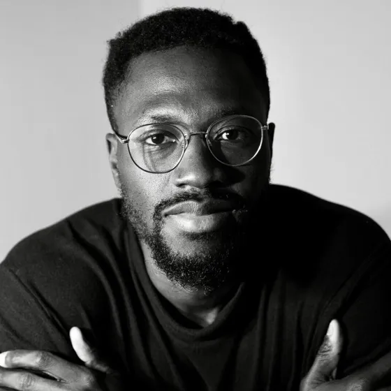

Abdul Qadir
Mathematiker · Mitgründer
I am a Ghanaian-Nigerian postdoctoral researcher in Mathematics with a focus on Machine Learning and Numerical Mathematics. I am passionate about understanding the nuances of programming and mathematics and their importance to the African community. My goal is to introduce programming to underprivileged communities through initiatives like teaching code. My vision is that every child has access to the opportunities coding has provided me.